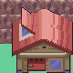
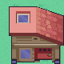
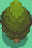

Native tiles and collision, restricted to the source tileset pair. Placement copies ground too; use a matching ground context. Door events are separate.
CherrygroveRoute30Approach · 01 Buildings | MrPokemon

Source cells [25, 1, 5, 5]
CherrygroveRoute30Approach · 01 Buildings | SouthernHouse

Source cells [13, 48, 5, 5]
CherrygroveRoute30Approach · 04 Stairs | north
Source cells [9, 0, 3, 2]
CherrygroveRoute30Approach · 04 Stairs | upper-plateau
Source cells [15, 6, 1, 2]
CherrygroveRoute30Approach · 04 Stairs | middle
Source cells [9, 28, 3, 1]
CherrygroveRoute30Approach · 04 Stairs | southwest
Source cells [6, 63, 4, 1]
CherrygroveRoute30Approach · 05 Ledges | Joined run 1
Source cells [9, 4, 3, 1]
CherrygroveRoute30Approach · 05 Ledges | Joined run 2
Source cells [7, 12, 6, 1]
CherrygroveRoute30Approach · 05 Ledges | Joined run 3
Source cells [8, 21, 5, 1]
CherrygroveRoute30Approach · 05 Ledges | Joined run 4
Source cells [8, 32, 3, 1]
CherrygroveRoute30Approach · 05 Ledges | Joined run 5
Source cells [6, 51, 4, 1]
CherrygroveRoute30Approach · 05 Ledges | Joined run 6
Source cells [5, 68, 5, 1]
CherrygroveRoute30Approach · 03 Scenery | NorthernRouteSign
Source cells [8, 23, 1, 2]
CherrygroveRoute30Approach · 03 Scenery | MrPokemonDirection
Source cells [20, 33, 1, 2]
CherrygroveRoute30Approach · 03 Scenery | Route30

Source cells [13, 57, 1, 2]
CherrygroveRoute30Approach · 02 Trees | Green tree / current ground

Source cells [33, 83, 2, 3]